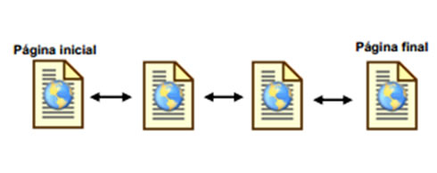

<!DOCTYPE html>
<html>
<head>
<meta charset="utf-8" />
<title> Remedial unidad 2 y 3 </title>
<style>

<link rel="stylesheet" type="text/css" href="estilos.css" />

</head>
<body>
	<center><h1> ESTRUCTURA DE LA INFORMACION</h1></center>
{
		background-image:url(blok.jpg);
		background-repeat:no-repeat;
		background-size:1400px 3200px;
		background-image: url(blok.jpg);
		font-family: arial;
		text-align: justify;
		margin: 0% 20% 10% 20%;
		background-size: 1600px 3800px;
	
}
img.double-border {
border: 5px solid #ddd;
padding: 5px; /*Inner border size*/
background: #fff; /*Inner border color*/
}
	


<p align="justify">
La flexibilidad de las estructuras de datos permite su aprovechamiento de formas muy variadas. 
Un buen reflejo de ello lo aporta el grafo, que se trata de una versión en la cual los datos están conectados debido a la presencia de nodos.
 Y todos estos nodos no solo disponen de un valor determinado que les ha sido asignado, sino que cuentan con vínculos con otros de los nodos.
 La facilidad en la comunicación de estos nodos abre muchas posibilidades y es por lo que se usan en la representación de redes.
 También lo facilita que a la hora de crear esta estructura se puedan definir puntos de inicio y de final mediante la elección de nodos exactos
 con los que se da la oportunidad de marcar la dirección a seguir en el proceso de trabajo. 
 Hay una variante específica que recibe el nombre de árbol y que se representa porque el camino parte de un punto inicial
 que deriva hacia todos los demás nodos. Este tipo de grafo no da la oportunidad de crear ciclos y también se puede agrupar en conjunto,
 lo que da lugar al término bosque.</p><br/>
 <br/><br/>

<p align="justify"> En su aspecto más general, el arte de la programación de ordenadores tiene mucho que ver con eso que llamamos
 la "inteligencia" humana;  los procesos de abstracción; la capacidad de imaginar un problema y sus posibles soluciones 
 (hemos dicho que programar es formular la solución de un problema). El proceso suele ir de lo general a lo particular y viceversa 
 (de las ideas abstractas a los detalles concretos), en un proceso que se realimenta constantemente.
En una primera fase, el programador concibe una imagen del problema (el primer paso es "comprender el problema"),
 sin embargo, para formular la solución, se necesita un vehículo o soporte sobre el que construirla.
 En nuestro caso conocer un lenguaje de programación, lo que en el fondo tiene un doble sentido: 
 el primero y más importante, es conocer que herramientas ofrece. Estas herramientas funcionan como ideas-soporte; 
 como ladrillos con los que construir la solución como si fuese una construcción material. Esto significa sobre todo, 
 que el programador piensa en función de las herramientas disponibles. Sin ellas es incapaz de imaginarse ninguna solución concreta. 
 El segundo significado es mucho menos importante (conceptualmente hablando); 
 supone el conocimiento de una serie de reglas formales de utilización de los elementos del lenguaje. 
 Sería la fase de mera codificación, tarea para la que existen herramientas cada vez más eficaces. 
 Por ejemplo, la amplia colección de herramientas RAD [1] que componen las modernas "suites" de desarrollo.
La situación es comparable a la de un hipotético Robinsón que en una isla desierta tuviese que resolver el problema de su alojamiento. 
Tiene conciencia del problema y de su solución en abstracto: "un refugio". Sin embargo, para pensar algo concreto necesita antes explorar la isla, 
conocer que posibilidades ofrece. ¿Existen cuevas naturales?, ¿Madera?, ¿Restos de naufragios? ¿Algo que pueda adaptarse? etc.
 Evidentemente la forma mental de su refugio dependerá de los medios disponibles; posteriormente, la construcción en sí, 
 será cuestión de detalle y de su propia habilidad manual.</p>
 </body>

</html>